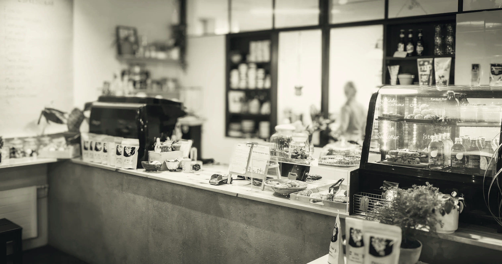
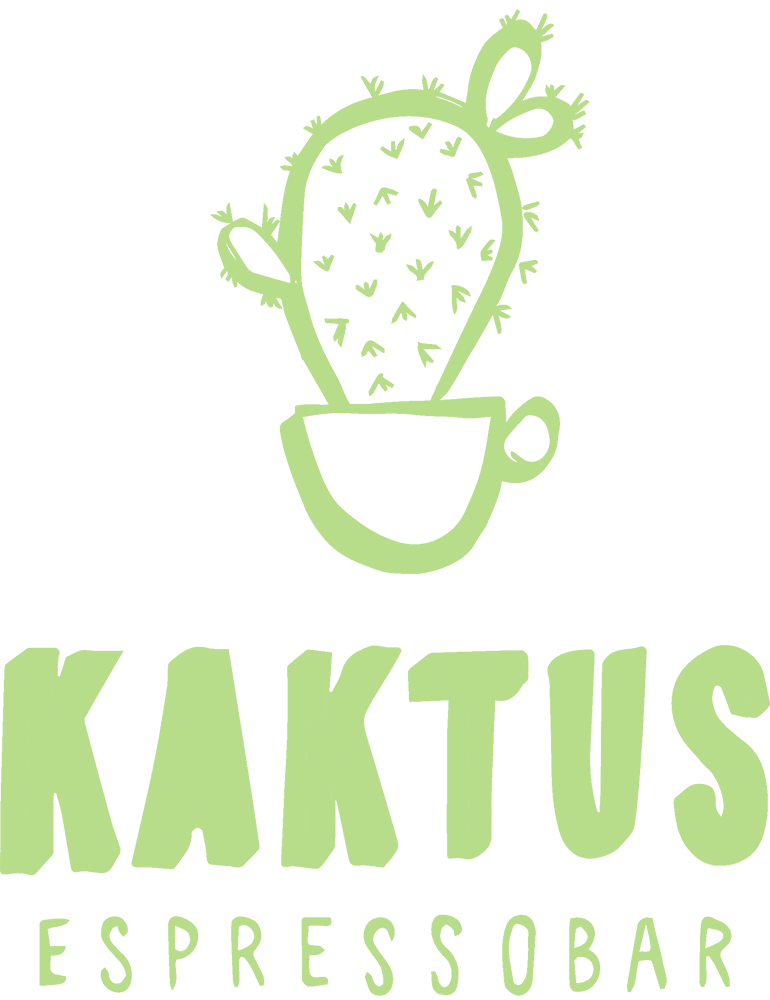
Vitastígur 12
Fríkirkjuvegur 7
101 Reykjavík
Open every day, Vitastígur 12, Fríkirkjuvegur 7, Espresso from half seven
Nobody here is in a hurry. The espresso is pulled when it is ordered, the bread is cut when it is eaten, and nobody is moved out of their seat.
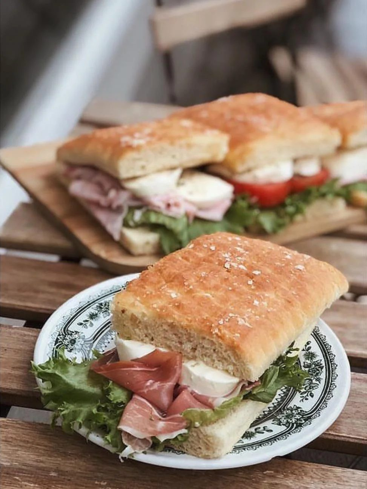
An ordinary morning in six seconds: the door, the jugs, the bread and the cup handed across the bar. Nothing staged, just our two rooms.
- Rooms
- Vitastígur 12 and Fríkirkjuvegur 7
- Length
- 6 seconds
- Pictures
- Kaktus Espressobar
- Cuts
- 27 cuts
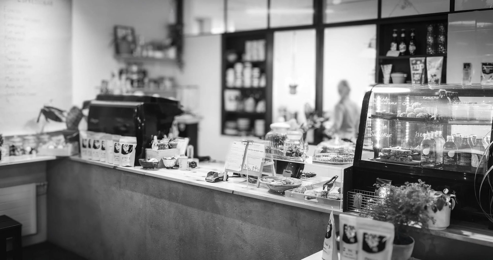
The original room, a step off Laugavegur and three minutes from Hlemmur. Small, warm and full of plants. The day starts here at half seven.
- Monday to Friday
- 07:30 to 17:00
- Saturday and Sunday
- 09:00 to 17:00
- Phone
- 869 3030
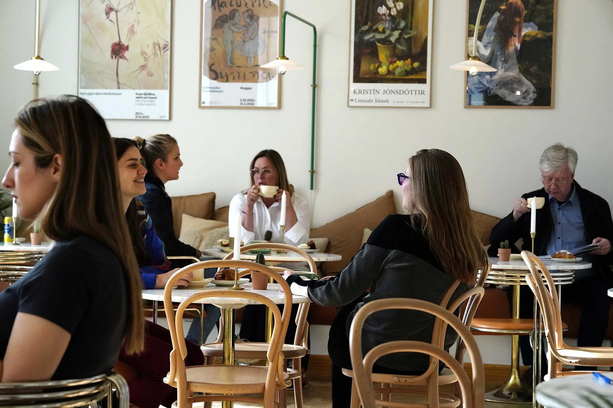
Inside the National Gallery of Iceland
The brighter room. White walls, art the whole way round and windows onto the pond. Open every day the gallery is.
- Every day
- 10:00 to 17:00
- Phone
- 869 3035
-
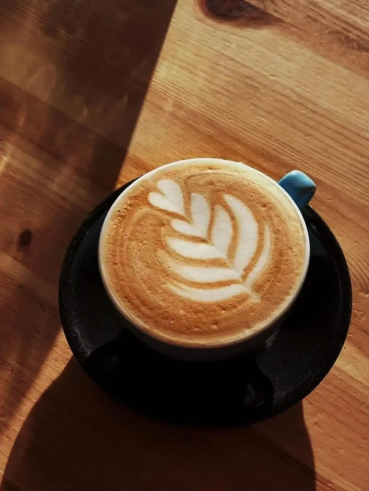
Latte, Vitastígur
-
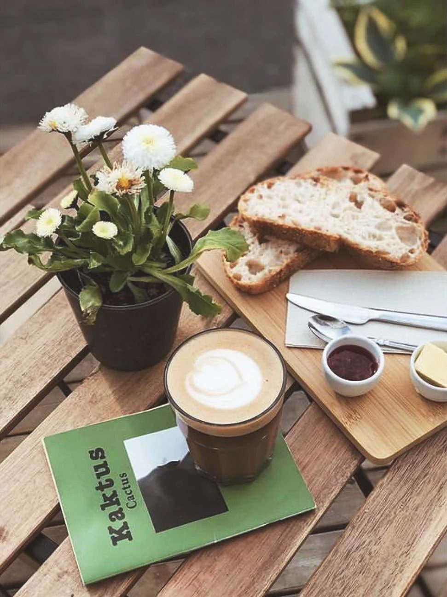
Outside on Vitastígur
-
The room at the National Gallery
-
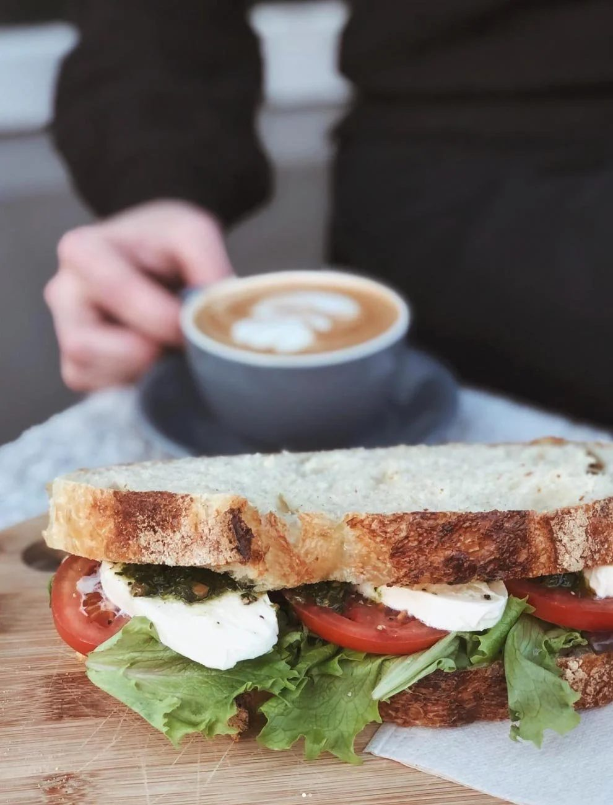
Sourdough sandwich
-
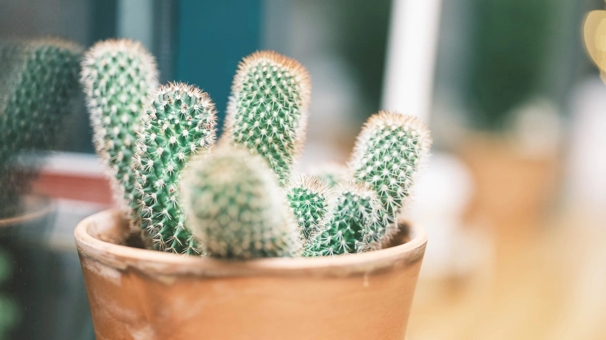
Cacti on the counter
-
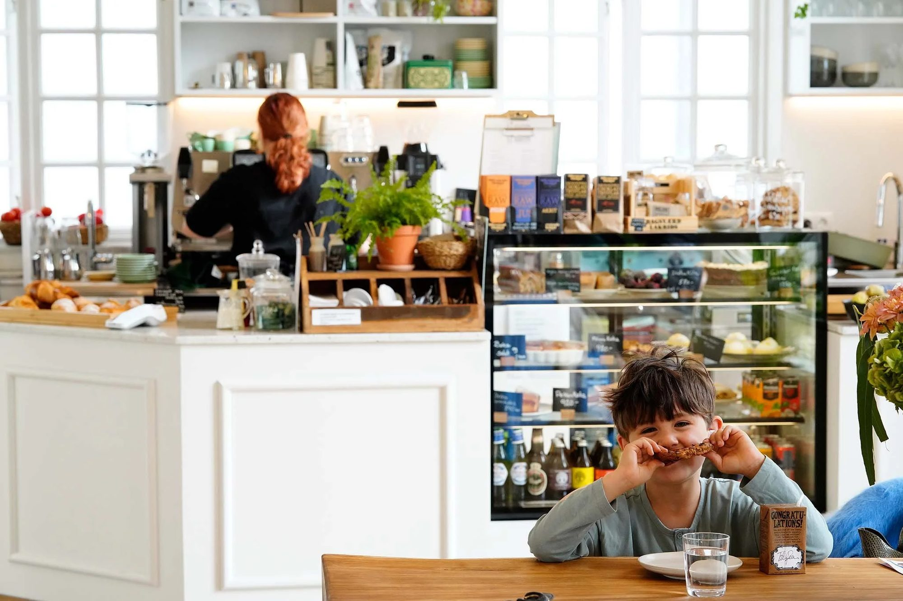
The counter at the National Gallery
-
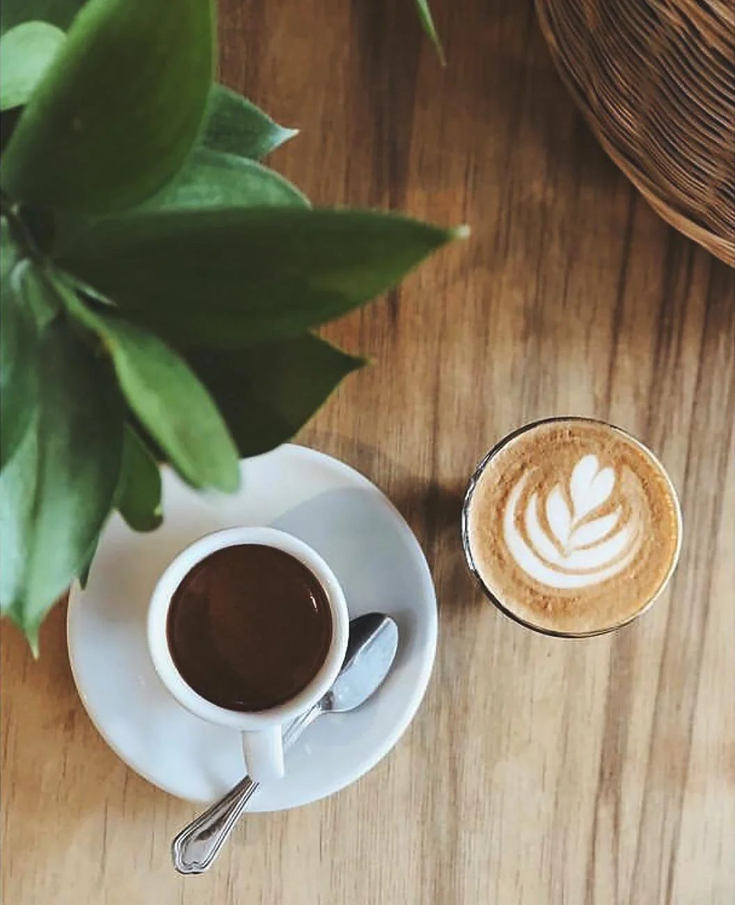
Two cups
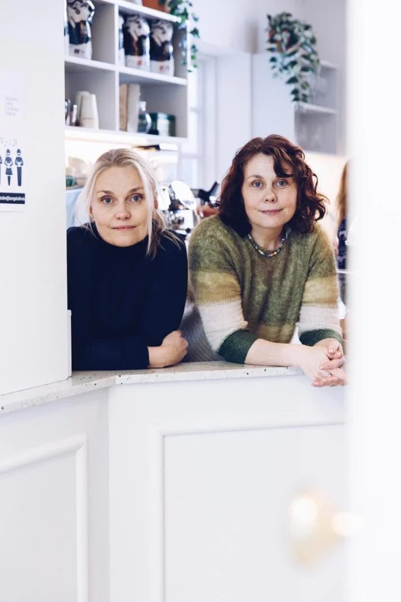
Kaktus is a small coffee house that became two. First on Vitastígur, where the room is tight and the same people keep coming back, then inside the National Gallery, where the hall is bright and the guests are on their way to an exhibition.
Same coffee in both rooms, same bread, same people behind the bar. The only thing that changes is the light.